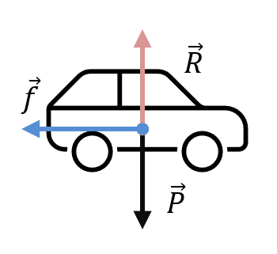
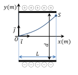
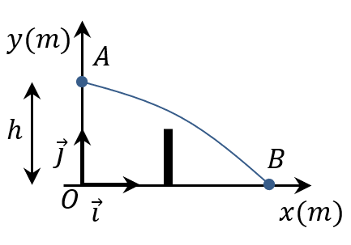

Lycée Taiarapu Nui
Terminale Générale
Terminale Générale
Spécialité Physique – Chimie
2020-2021
2020-2021
C4. Mouvement dans un champ uniforme
Activité 1
Document 1 −
Principe d'inertie
En 1687 Newton publie un ouvrage dans lequel il énonce le principe d’inertie:
Si les forces qui s’exercent sur un système se compensent, ce système est soit immobile soit en mouvement rectiligne uniforme.
La réciproque est vraie : Si un système est soit eu repos, soit en mouvement rectiligne uniforme, alors les forces qui s’exercent sur lui se compensent.
Si les forces qui s’exercent sur un système se compensent, ce système est soit immobile soit en mouvement rectiligne uniforme.
La réciproque est vraie : Si un système est soit eu repos, soit en mouvement rectiligne uniforme, alors les forces qui s’exercent sur lui se compensent.
1) Que signifie : « les forces se compensent » ?
Un véhicule roule sur une route rectiligne à vitesse constante. Soudain le conducteur freine, les passagers semblent alors être projeter vers l’avant.
2) Le principe d’inertie permet-il expliquer cette situation?
3) Appliquer la réciproque du principe d’inertie au mouvement
de la Lune (qu’on suppose circulaire uniforme). Que peut-on conclure?
Exercice 1

Dans le référentiel terrestre un vélo est en mouvement rectiligne uniforme sur une distance
de 50m. On s’intéresse à la roue arrière du vélo.
4) Dans cette situation, le référentiel terrestre peut-il être considéré comme galiléen ?
5) La trajectoire d’un point de la roue dans le référentiel terrestre est-elle simple ?
6) Quel est le point de la roue pour lequel s’applique le principe d’inertie ?
Exercice 2

Une voiture de masse $ m=900 \ kg$ se déplace moteur arrêté sur une route horizontale.
Elle ralentit sous l’effet des forces de frottements exercées par l’air et par la
route sur les pneus.
Toutes les forces qui s’appliquent sur la voiture sont représentées en son centre de masse $M$ sans soucis d’échelle. Le poids $\vec{P}$ du véhicule et la réaction $\vec{R} $ de la route sur les pneus se compensent. La valeur de la force de frottement est $f=300\ N$.
Toutes les forces qui s’appliquent sur la voiture sont représentées en son centre de masse $M$ sans soucis d’échelle. Le poids $\vec{P}$ du véhicule et la réaction $\vec{R} $ de la route sur les pneus se compensent. La valeur de la force de frottement est $f=300\ N$.
7) À l’aide de la deuxième loi de Newton, déterminer les caractéristiques du vecteur
accélération de $M$.
Exercice 3
Un ascenseur de masse $m=1000\ kg$ se trouve au niveau du sol. Il démarre pour monter
les passagers aux étages supérieurs. L’accélération est $a=1,5\ m.s^{-2}$ jusqu’à
ce qu’il atteigne la vitesse constante $v=2,0\ m.s^{-1}$.
8) Faire le bilan des forces.
9) Applique la 2ème loi de Newton et déterminer la tension $\vec{T}$ du câble qui permet à
l’ascenseur de monter.
10) Déterminer la valeur de la tension lorsque la vitesse devient constante.
Exercice 4
Un joueur de rugby réalise une chandelle. Il communique au ballon une
vitesse $\overrightarrow{v_0} $ formant un angle α avec l’horizontale. À $t=0\ s$,
le ballon se trouve à une hauteur h au-dessus du sol.
Un de ses coéquipiers arrive derrière lui et le dépasse au moment où il frappe le ballon, afin d’essayer de le récupérer.
Un de ses coéquipiers arrive derrière lui et le dépasse au moment où il frappe le ballon, afin d’essayer de le récupérer.
11) Faire un schéma.
12) Établir les équations du mouvement du ballon.
13) Calculer la durée écoulée avant que le ballon ne touche le sol.
14) Déterminer alors la distance D à parcourir du coéquipier pour récupérer le ballon.
On supposera qu’il le récupère juste avant qu’il ne touche le sol.
Activité 2
Document 2 −
Champ électrique

Un condensateur plan est constitué de deux plaques métalliques planes et
parallèles, séparées d’une distance $d$ (occupée par un matériau isolant
ou de l’air).
Lorsque le condensateur est branché à un générateur de tension continue $U$, les plaques se chargent : elle est positive pour celle reliée à la borne positive, et négative pour celle reliée à la borne négative.
Entre les plaques règne un champ électrique $\vec{E}$ uniforme :
Lorsque le condensateur est branché à un générateur de tension continue $U$, les plaques se chargent : elle est positive pour celle reliée à la borne positive, et négative pour celle reliée à la borne négative.
Entre les plaques règne un champ électrique $\vec{E}$ uniforme :
| \[ \vec{E}=-E.\vec{j} \; \text{ avec } E=\frac{U}{d} \; \] | $E$ : en $V.m^{-1}$ $U$ : en volt ($V$) $d$ : distance en mètre ($m$) $\vec{j}$ : vecteur unitaire dirigé du moins vers le plus |
Une particule de charge $q$ et de masse $m$ placée dans ce champ électrique
subit la force électrique $\vec{F_e} = q.\vec{E}$
Document 3 −
Particule chargée entre les plaques d’un condensateur
3e Expérience de J.J. Thomson (1897).
On cherche à déterminer la trajectoire d’un électron dans le champ électrique uniforme entre les plaques du condensateur.
L’électron est envoyé entre les plaques à partir de la position $O$ avec la vitesse $\overrightarrow{v_0} =v_0.\vec{i}$ et $v_0=2,27×10^7 m/s$.
Champ électrique $E=15,0 kV.m^{-1}$
La longueur d’une plaque est $L=8,50\ cm$
L’électron sort du condensateur au point de sortie $S$ d’abscisse $x_S=L$ et d’ordonnée $y_S=1,85\ cm$.
La charge de l’électron est : $e=-1,602×10^{-19} C$
On cherche à déterminer la trajectoire d’un électron dans le champ électrique uniforme entre les plaques du condensateur.
L’électron est envoyé entre les plaques à partir de la position $O$ avec la vitesse $\overrightarrow{v_0} =v_0.\vec{i}$ et $v_0=2,27×10^7 m/s$.
Champ électrique $E=15,0 kV.m^{-1}$
La longueur d’une plaque est $L=8,50\ cm$
L’électron sort du condensateur au point de sortie $S$ d’abscisse $x_S=L$ et d’ordonnée $y_S=1,85\ cm$.
La charge de l’électron est : $e=-1,602×10^{-19} C$
15) On montre que le poids de la particule est négligeable devant la force
électrique $\vec{F_e}$. Appliquer la 2e loi de Newton.
16) Exprimer l’accélération $\vec{a}$ que subit la particule chargée en fonction de la
charge $q$, du vecteur champ électrique $\vec{E}$ et de la masse $m$ de l’électron.
17) Par intégration exprimer les coordonnées du vecteur vitesse $\vec{v}$ en fonction de
la vitesse initiale $v_0$, de la charge $q$, du champ électrique $E$, de la masse $m$
et du temps $t$.
18) Même question pour le vecteur position $\overrightarrow{OG}$.
19) Donner l’expression de l’équation de la trajectoire $y$ en fonction de $x$,
de la vitesse initiale $v_0$, de la charge $q$, du champ électrique $E$, de la masse $m$.
20) En déduire puis calculer le rapport $\dfrac{e}{m}$.
21) Quelle est la masse de l’électrons ?
Exercice 5

Pour servir au tennis un joueur placé en $O$ lance une balle verticalement
et la frappe en $A$ à une hauteur $h=2,7\ m$ au-dessus du sol.
La balle part avec une vitesse horizontale de valeur $v_A=126\ km.h^{-1}$ dans le référentiel terrestre supposé galiléen. De masse m, elle n’est soumise qu’à son poids $\vec{P}$.
La balle part avec une vitesse horizontale de valeur $v_A=126\ km.h^{-1}$ dans le référentiel terrestre supposé galiléen. De masse m, elle n’est soumise qu’à son poids $\vec{P}$.
Donnée : intensité de la pesanteur $g=9,81\ m.s^{-2}$
22) Avec les hypothèses énoncées, l’énergie mécanique de la balle
est-elle constante ?
23) Avec les hypothèses énoncées, que peut-on dire de l’énergie cinétique
de la balle ?
24) Calculer la vitesse $v_B$ de la balle lorsqu’elle touche le sol en $B$.